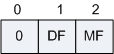
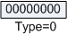
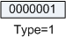
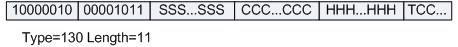
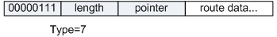
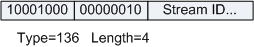
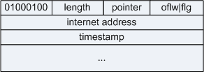

| 字段 | 长度 | 含义 |
|---|---|---|
| Version | 4比特 |
|
| IHL | 4比特 | 首部长度，如果不带Option字段，则为20，最长为60，该值限制了记录路由选项。以4字节为一个单位。 |
| Type of Service | 8比特 | 服务类型。只有在有QoS差分服务要求时这个字段才起作用。 |
| Total Length | 16比特 | 总长度，整个IP数据报的长度，包括首部和数据之和，单位为字节，最长65535，总长度必须不超过最大传输单元MTU。 |
| Identification | 16比特 | 标识，主机每发一个报文，加1，分片重组时会用到该字段。 |
| Flags | 3比特 | 标志位： 图2 IP Flag字段格式

|
| Fragment Offset | 12比特 | 片偏移：分片重组时会用到该字段。表示较长的分组在分片后，某片在原分组中的相对位置。以8个字节为偏移单位。 |
| Time to Live | 8比特 | 生存时间：可经过的最多路由数，即数据包在网络中可通过的路由器数的最大值。 |
| Protocol | 8比特 | 协议：下一层协议。指出此数据包携带的数据使用何种协议，以便目的主机的IP层将数据部分上交给哪个进程处理。 常见值：
|
| Header Checksum | 16比特 | 首部检验和，只检验数据包的首部，不检验数据部分。这里不采用CRC检验码，而采用简单的计算方法。 |
| Source Address | 32比特 | 源IP地址。 |
| Destination Address | 32比特 | 目的IP地址。 |
| Options | 可变 | 选项字段，用来支持排错，测量以及安全等措施，内容丰富（请参见下表）。选项字段长度可变，从1字节到40字节不等，取决于所选项的功能。 |
| Padding | 可变 | 填充字段，全填0。 |
| CLASS | NUMBER | 长度 | 含义 |
|---|---|---|---|
| 0 | 0 | - | Code为0代表了选项列表的结束，放在所有选项链表的后面，用来补字节对齐。 该选项无长度字段，占一个字节。 选项格式如下：  |
| 0 | 1 | - | 表示无操作的选项。用在各种选项之间，占一个字节。用于填充4字节对齐。 选项格式如下：  |
| 0 | 2 | 11字节 | 表示安全和处理限制的选项。 该选项提供一种主机可以发送安全、分隔、处理限制及TCC（关闭使用组）的参数功能。 选项格式如下： 
|
| 0 | 3 | 可变 | 松散的源站选路（为数据报指定一系列必须经过的IP地址） 选项格式如下：
|
| 0 | 7 | 可变 | 记录路径（让每个路由器都记下它的IP地址）。 选项格式如下： 
|
| 0 | 8 | 4字节 | 流标识选项。该选项长度固定为4字节，code值为136，后面的字段固定为0x02，流ID为2字节。该选项提供了一种携带SATNET流标识符通过不支持流方式的网络。 选项格式如下：  |
| 0 | 9 | 可变 | 严格的源站选路选项。与宽松的源站选路类似，但是要求只能经过指定的这些地址，不能经过其他的地址。 选项格式如下：
|
| 2 | 4 | 可变 | 时间戳选项。 选项格式如下： 
|
| 标准Standard | Description |
|---|---|
| RFC 791 | INTERNET PROTOCOL |